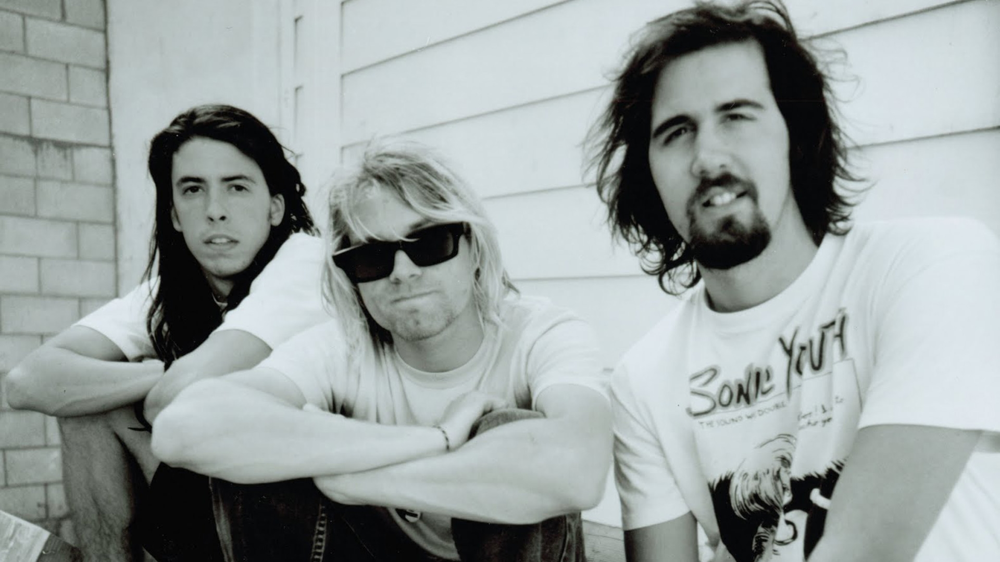
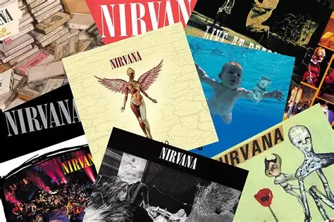
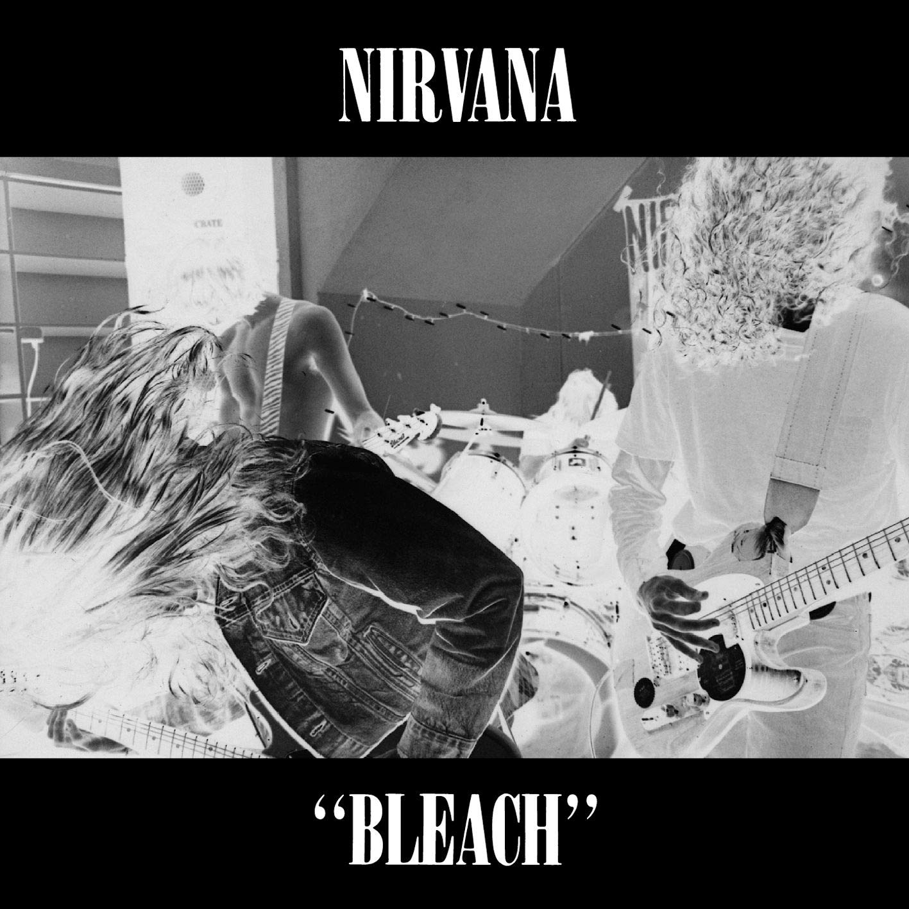
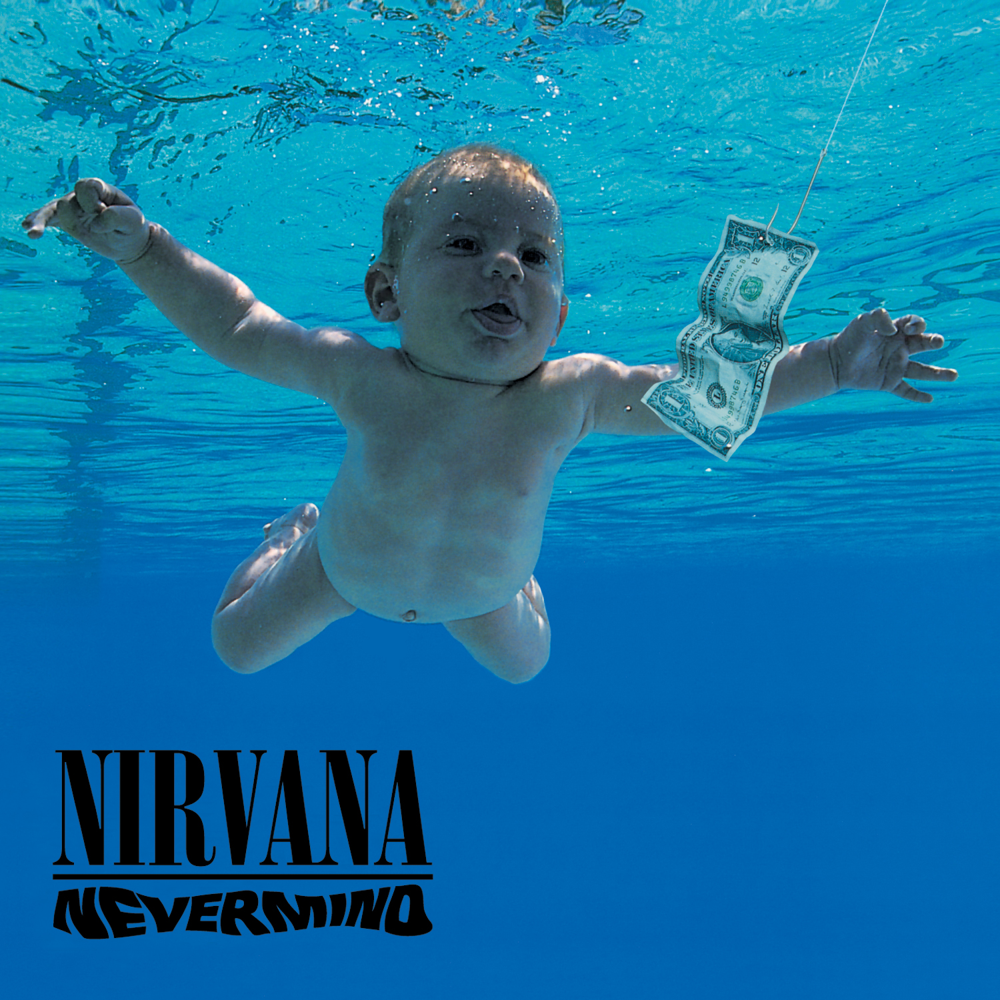
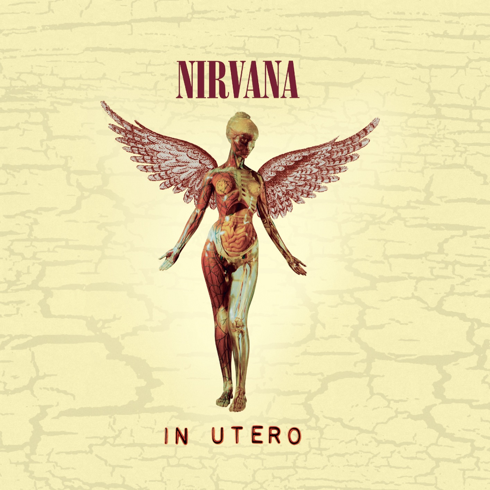

Nirvana fue una banda de rock estadounidense formada por el vocalista y
guitarrista Kurt Cobain y el
bajista Krist Novoselic en Aberdeen (Washington) en 1987.
La banda pasó por una sucesión de bateristas,
siendo Chad Channing quien más tiempo permaneció
hasta que en 1990 fue sustituido por Dave Grohl, su baterista
definitivo.
El éxito de la banda popularizó el rock alternativo y a menudo son considerados
la banda más representativa de la Generación X.
A pesar de contar con una corta carrera profesional
que duró sólo siete años, su música sigue siendo popular y continúa influyendo en el
rock moderno.
Grammy (1996): Mejor álbum de música alternativa.
MTV Video Music Awards (1992): Premios por Smells Like Teen Spirit.
American Music Awards (1995): Artista favorito de hard rock.
Salón de la Fama del Rock (2014): Reconocimiento a su influencia en la música.
Grammy a la Trayectoria (2023): Por su contribución a la música.
Miembros principales de Nirvana:
Kurt Cobain: voz y guitarra.
Krist Novoselic: bajo.
Dave Grohl: batería.
Exmiembros:
Chad Channing: batería.
Nirvana se separó en 1994 tras la muerte de su vocalista y guitarrista, Kurt Cobain, en abril de ese año. Sin él, Krist Novoselic y Dave Grohl continuaron sus carreras musicales por separado, dando fin a la banda.


Bleach (1989) es el álbum debut de Nirvana. Se caracteriza por un sonido crudo y pesado que mezcla grunge, punk rock y rock alternativo. Sus canciones reflejan emociones intensas y una atmósfera oscura, destacando temas como About a Girl, Blew y Negative Creep. Fue el inicio del camino de Nirvana hacia la fama.
Play
Nevermind (1991) es el segundo álbum de Nirvana y el que los llevó a la fama mundial. Combina grunge, punk rock y melodías pegadizas, con letras que expresan inconformidad y emociones personales. Incluye canciones icónicas como Smells Like Teen Spirit, Come as You Are y Lithium. Fue uno de los álbumes más influyentes de los años 90.
Play
In Utero (1993) es el tercer y último álbum de estudio de Nirvana. Presenta un sonido más crudo y experimental que Nevermind, con letras personales y críticas que reflejan las emociones de Kurt Cobain. Destacan canciones como Heart-Shaped Box, Serve the servants y All Apologies.
Play